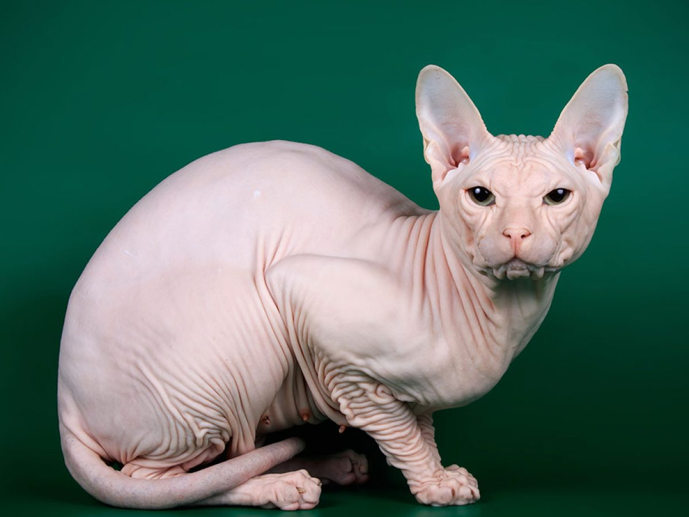
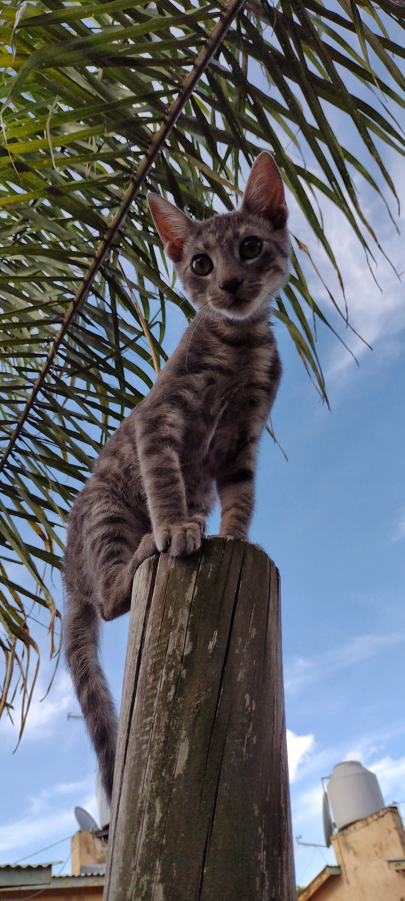

Entre la gatada tambien hay una gran variedad de tipos colores y olores, también se va a armar una lista sobre ellos:
- Siames
- Abisinio
- Azul Ruso
- Egipcio
- Chispita
Gato bicolor de cremita y oscuro. Un facherazo. Me gusta.

El abisinio no lo conozco mucho,parece un gato comun pero un poco mas fino(?

El gato azul ruso es un elegante gato de color grisáseo, muy elegante y combinan su pelaje y ojos.

El gato egipcio es el famoso que no tiene ningún pelo, es pura piel. Elegante pero raro. Debe ser muy delicado mantenerlo.
Chispita es mi gato, un random que es fachero también. Me cae muy bien. Diez de diez
